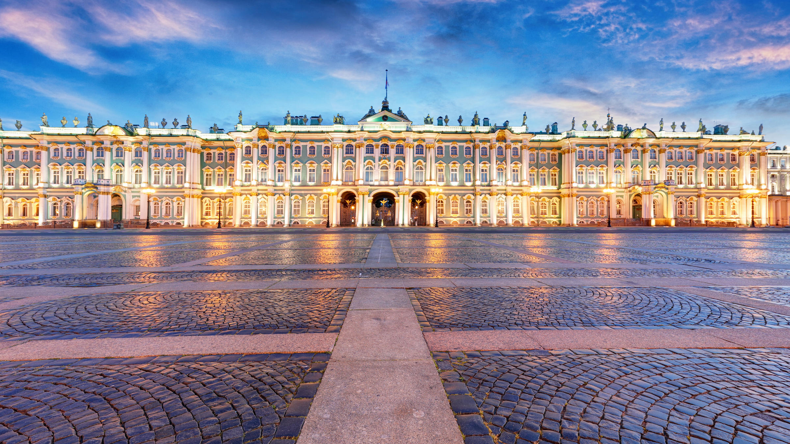
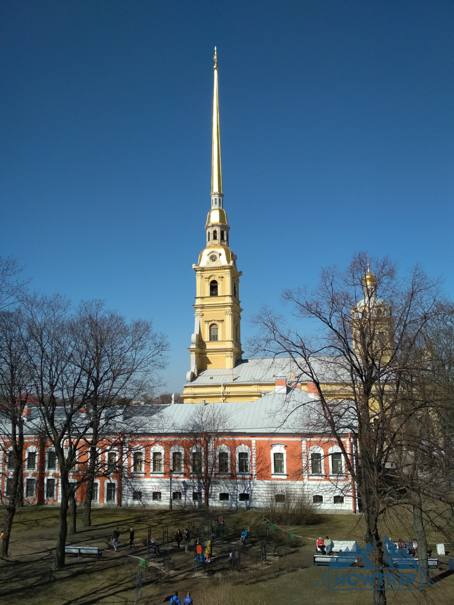
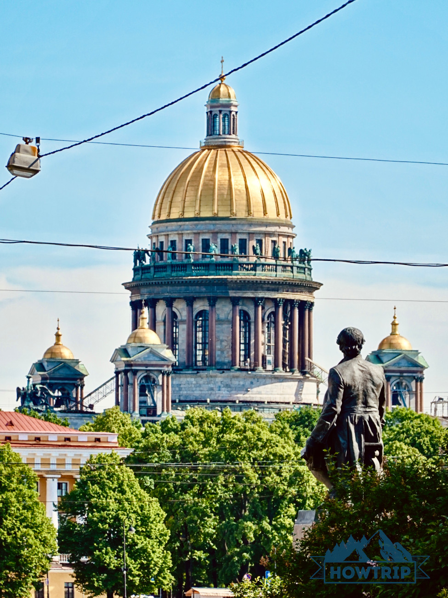
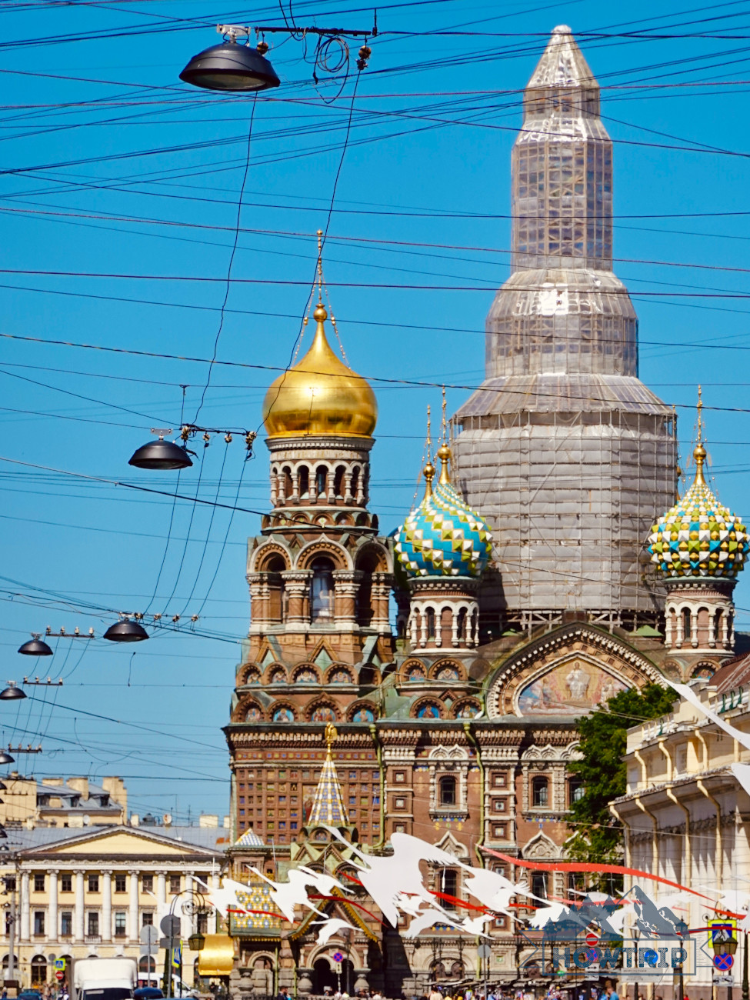
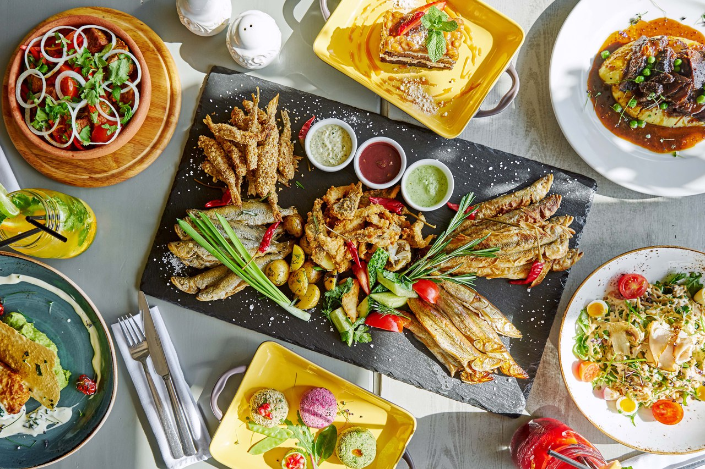
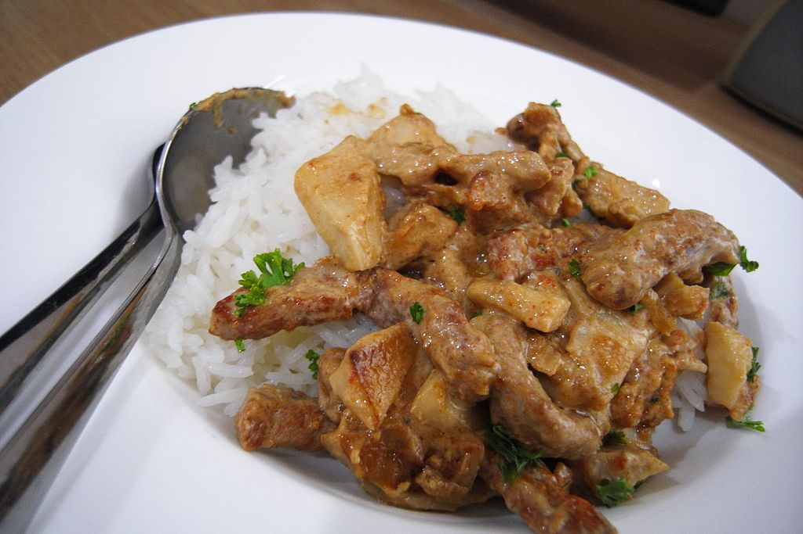
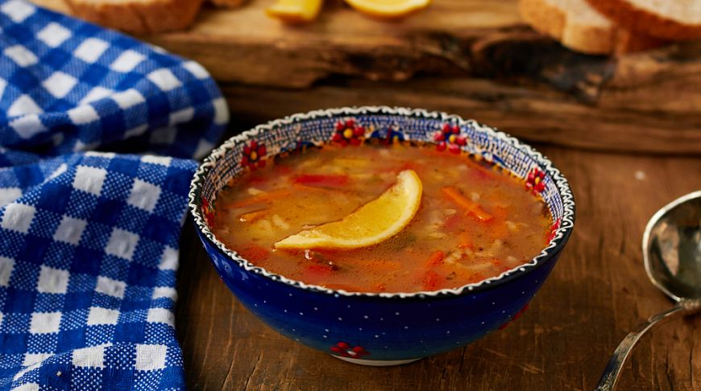

Куда сходить в питере для ценителей культуры и искусства
1 Эрмитаж

Эрмитаж – питерская достопримечательность №1 для туристов
со всего мира! Здесь 5 главных комплексов: Главный музейный комплекс,
Главный штаб, Зимний дворец, дворец Меншикова и музей Императорского
фарфорового завода. Зимой на Дворцовой площади добавляется
еще одна знаковая локация — главная ёлка Санкт-Петербурга (она, безусловно,
очень красива вечером с подсветкой, но сколько же собирается народу…
поэтому мы смотрели днем, и остались целы).
Если вы настроены на вдумчивое посещение Эрмитажа — за 1 день
даже сокращенную программу сложно выполнить
2 Петропавловская крепость

Сердце всего города, с которого и начал свою историю Санкт-Петербург.
Находится на Заячьем острове. Здесь 2 главных объекта – Петропавловский
собор и Великокняжеская усыпальница, а также музеи. Плюс, много различных
экспозиций и открытых музейных фондов, которые достаточно часто меняются.
Здорово, если окажетесь в крепости около 12 дня. Ежедневно ровно в полдень с
Нарышкина бастиона раздается пушечный выстрел (да, громко).
Если вы любите необычные достопримечательности, обратите внимание
на памятник Петру I работы Михаила Шемякина. Он расположен напротив
Усыпальницы, мимо точно не пройдете (ориентируйтесь на толпу туристов, дружно
сверкающих вспышками фототехники).
3 Исаакиевский собор

Исаакиевский собор – грандиозный и прекрасный! В хорошую погоду
его купол виден даже из некоторых точек отдаленных спальных районов
города. И до сих пор является мерой высоты при застройке исторического
центра – выше строить нельзя.
Классные фото можно сделать на поляне перед собором — хотя он красив и с
задней, и с боковой стороны
4 Спас на Крови

Яркий и нарядный, построенный на месте трагического события,
сейчас он ежедневно привлекает огро-о-омное количество туристов.
И первое, что у Спаса на Крови после фото делает турист — заходит в интернет
и ищет, почему он так похож на московский собор Василия Блаженного.
Питерские блюда, которые нужно поесть хотя бы раз в жизни
1 Жареная корюшка

Корюшка — один из символов Санкт-Петербурга, и самая любимая рыбка
жителей города на Неве, неразрывно связанная с его
историей. Когда был основан Санкт-Петербург, невская
корюшка стала рыбой-кормилицей для растущего населения
Северной столицы.
Как гласит легенда, Пётр I называл корюшку царь-рыбой.
И сегодня мастерски и с душой приготовленная корюшка — ароматная
и таящая во рту — украшение любого петербургского застолья и по
праву заслуживает центрального царского места.
Корюшка, без преувеличений, является настоящим кулинарным
символом Санкт-Петербурга. Маленькая, но очень вкусная рыбка обитает в местных
водах,
поэтому всегда использовалась в пищу горожанами. Сезоном корюшки
считается весна. Именно в это время года почти из каждого ресторанчика
и дома доносится огуречный аромат жареной рыбы
2 Питерские сладкие пышки
Таких пышек, как пекут в городе на Неве, где сдобная пышка, таящая
во рту, стала уже культом, вы нигде не попробуете. Пышка — реально
самое настоящее питерское лакомство. Золотистая и горячая,
как солнце, пышка пышет роскошным вкусом. Пышки в Петербурге
— традиционный десерт.
Eсли вы побывали в Северной столице и не попробовали пышки,
значит, вы не узнали вкус Санкт-Петербурга. Круглые горячие булочки
с дыркой посередине обычно посыпают сахарной пудрой и запивают
ароматным кофе или какао, пахучим чаем, это ритуал. Научитесь сами их печь,
будет отлично!
3 Бефстроганов

Бефстроганов — традиционно русское блюдо, любимое и знаменитое
в Петербурге. Его изобретение приписывают петербуржцу — графу
Александру Строганову. Согласно одной из легенд, повар впервые приготовил
мелко нарезанную говядину для старого графа, которому сложно было
пережевывать жесткую пищу. Отсюда и название блюда.
Благодаря петербургскому повару и графу блюдо получило широкую
известность во всём мире. И сегодня оно представляет собой мелко нарезанные
кусочки говядины в сметанном соусе. Существуют различные варианты
приготовления, в некоторых из них вместо говядины используют другое мясо,
курицу или свинину. Неудивительно, что это одно из самых популярных блюд
в Северной столице.
4 Ленинградский рассольник

Рассольник также относят к традиционным блюдам русской кухни.
Этот суп с приятным кисло-соленым вкусом всегда готовился с
использованием соленых огурцов или огуречного рассола.
В советское время на территории нынешнего Петербурга
популярностью пользовался рецепт с перловкой и мясом, который
так и прозвали — «ленинградский».
В Петербурге с 15 ноября расширяется сфера применения QR-кодов
С понедельника, 15 ноября, в Петербурге расширяется список организаций и
мероприятий,
доступ на которые возможен только по предъявлении QR-кода о вакцинации или
перенесенном
не ранее полугода назад COVID-19. Эти меры предусмотрены последней редакцией
постановления
правительства Санкт-Петербурга № 121.
Эпидемиологическая ситуация в Питере на ноябрь
3 131 заболело COVID-19
3 419 выздоровело
78 умерло
18 стационаров работает с COVID‑19
9 488 коек развернуто
40,89 % свободный коечный фонд
7 407 на лечении в стационарах с COVID‑19 и пневмониями
39 157 на амбулаторном лечении
38 706 получают бесплатную лекарственную терапию на дому
3 762 на карантине
177 пунктов вакцинации от COVID‑19
1 908 530 привито первично
15 960 тестов ПЦР на COVID‑19
3 419 выздоровело
78 умерло
18 стационаров работает с COVID‑19
9 488 коек развернуто
40,89 % свободный коечный фонд
7 407 на лечении в стационарах с COVID‑19 и пневмониями
39 157 на амбулаторном лечении
38 706 получают бесплатную лекарственную терапию на дому
3 762 на карантине
177 пунктов вакцинации от COVID‑19
1 908 530 привито первично
15 960 тестов ПЦР на COVID‑19